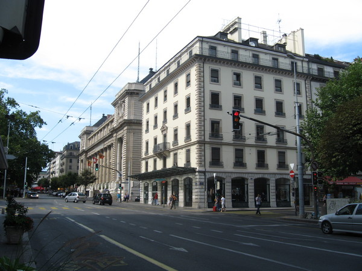

Достоевский
В феврале 1865 года, через полгода после смерти брата, издание «Эпохи» прекратилось. Взяв на себя ответственность за долговые обязательства «Эпохи» и испытывая финансовые затруднения, Достоевский вынужден был согласиться на кабальные условия договора по публикации собрания сочинений с издателем Ф. Т. Стелловским и начал работать над романом «Преступление и наказание». С 1865 по 1870 год Стелловский издавал полное по тем временам собрание сочинений Достоевского в 4-х томах. Создание «Преступления и наказания» началось в августе 1865 года за границей. Сохранился черновик письма писателя 10 (22)—15 (27) сентября 1865 года М. Н. Каткову с изложением сюжета почти законченной повести и предложением её публикации в журнале «Русский вестник», аванс за которую Катков отослал Достоевскому в Висбаден. В этом письме Каткову Достоевский описал содержание и главную идею повести. «Психологический отчет одного преступления» молодого человека, исключённого из университета студента, живущего в крайней бедности, который «по легкомыслию и по шатости в понятиях поддался некоторым странным „недоконченным“ идеям». «Он решился убить одну старуху, титулярную советницу, дающую деньги на проценты», чтобы сделать счастливой свою мать и сестру. После он мог бы окончить университет, уехать за границу и «всю жизнь быть честным, твердым, неуклонным в исполнении „гуманного долга к человечеству“».
Роман был создан за 26 дней. С 4 по 29 октября Анна Григорьевна записывала текст под диктовку на квартире писателя в доме И. М. Алонкина в Петербурге на углу Малой Мещанской и Столярного переулка, а не в Баден-Бадене, о чём «свидетельствует» надпись под барельефом Достоевского «Здесь был написан роман „Игрок“». Возможно, не случайно писателем было выбрано это место, где происходили события, описанные в повести М. Ю. Лермонтова «Штосс», и «проживал» Родион Раскольников. Вскоре после передачи рукописи романа «Игрок» издателю, 8 ноября 1866 года, Достоевский сделал Анне Григорьевне предложение руки и сердца. 15 февраля 1867 года в Троицком соборе состоялось таинство венчания Достоевского и А. Г. Сниткиной. Роман «Преступление и наказание» был оплачен М. Н. Катковым очень хорошо, но чтобы эти деньги не отобрали кредиторы, писатель уехал за границу со своей новой женой. Поездка отражена в дневнике, который в 1867 году начала вести жена писателя Анна Григорьевна. По пути в Германию супруги остановились на несколько дней в Вильне.
За рубежом был написан роман «Идиот», работу над которым Достоевский начал в сентябре 1867 года в Женеве, продолжил там же до конца мая 1868 года, затем писал его в Веве и Милане, а закончил во Флоренции 17 (29) января 1869 года. Основную идею романа Достоевский изложил в письме из Женевы к А. Н. Майкову от 31 декабря 1867 (12 января 1868) года: «Давно уже мучила меня одна мысль, но я боялся из неё сделать роман, потому что мысль слишком трудная и я к ней не приготовлен, хотя мысль вполне соблазнительная и я люблю её. Идея эта — изобразить вполне прекрасного человека. Труднее этого, по-моему, быть ничего не может, в наше время особенно». «Идиот» — одно из самых сложных произведений Достоевского. Трагичность романа заключается в том, что «Князю-Христу» (Мышкину — любимому герою писателя) вмешательством в судьбы других персонажей никого не удаётся осчастливить, не удаётся победить враждебные силы, жертвой которых становится и он сам.
В марте 1878 года Комитет общества литераторов Франции пригласил Достоевского принять участие в Международном литературном конгрессе в Париже под председательством В. Гюго. В списке членов Международной литературной ассоциации Достоевский возглавлял представителей от России. По причинам болезни и смерти сына Алексея 16 мая Достоевский не смог присутствовать на конгрессе, состоявшемся 30 мая (11 июня) 1878 года.
Зимой 1878 года воспитатель великих князей Сергея и Павла Александровичей Д. С. Арсеньев по просьбе императора Александра II познакомился с Достоевским и весной пригласил писателя на обед к великим князьям. С Александром II Достоевский не был лично знаком, но трижды присутствовал на обедах с его сыновьями Сергеем и Павлом Александровичами. 21 марта и 24 апреля 1878 года на обедах у великих князей с Достоевским присутствовал К. Н. Бестужев-Рюмин. Третий обед с Достоевским состоялся 5 марта 1879 года, о чём великий князь К. К. Романов оставил запись в дневнике. 16 декабря 1880 года Достоевский был принят наследником и будущим императором Александром III в Аничковом дворце. В эти же годы писатель сблизился с консервативными журналистами, публицистами и мыслителями, переписывался с видным государственным деятелем К. П. Победоносцевым, с которым был знаком с 1872 года. Весной 1878 года Достоевский заинтересовался личностью одного из родоначальников русского космизма Н. Ф. Фёдорова, идеи которого считал «как бы за свои», и посещал некоторые лекции Вл. С. Соловьёва «О Богочеловечестве». Размышления писателя над близкими ему философскими идеями Н. Ф. Фёдорова и проблема соотношения природного и нравственного начал человеческой личности, затронутая в чтениях Вл. Соловьёва, будут отражены в «Братьях Карамазовых».
Итогом творческого и жизненного пути Достоевского стал последний роман «великого пятикнижия» «Братья Карамазовы», замысел которого возник весной 1878 года, но был связан с неосуществлёнными планами масштабных произведений «Атеизм» (1868—1869) и «Житие великого грешника» (1869—1870). Некоторые образы, эпизоды и идейные мотивы последнего романа Достоевского берут истоки почти во всех предшествующих произведениях, начиная с «Бедных людей» и заканчивая «Дневником писателя» и «Подростком». Первые черновые заметки к роману «о детях» («Братья Карамазовы») появились после 12 апреля 1878 года и были озаглавлены «„Memento“ (о романе)». Писатель планировал включить в сюжет события из неосуществлённого замысла 1874 года «Драма. В Тобольске». Несколько дней в июне 1878 года Достоевский с Вл. Соловьёвым провёл в Оптиной пустыни. Встречи с иноками повлияли на создание образа старца Зосимы. Проведя лето 1878 года в Старой Руссе, Достоевский с семьёй вернулся в Петербург и 5 октября поселился в квартире дома 5/2 в Кузнечном переулке, где проживал до дня своей смерти 28 января 1881 года. Здесь же в 1880 году писатель закончил свой последний роман «Братья Карамазовы», печатавшийся в журнале «Русский вестник» с февраля 1879 года (январский выпуск). В настоящее время в квартире расположен Литературно-мемориальный музей Ф. М. Достоевского.